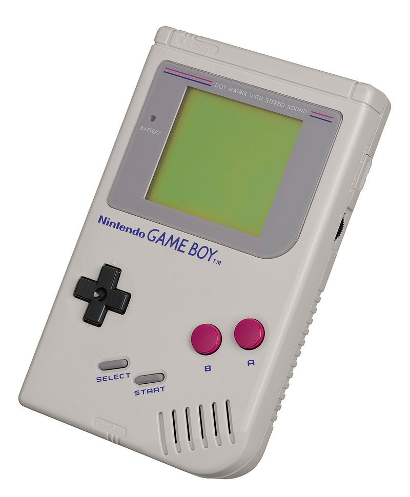
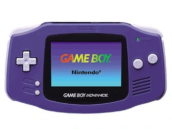
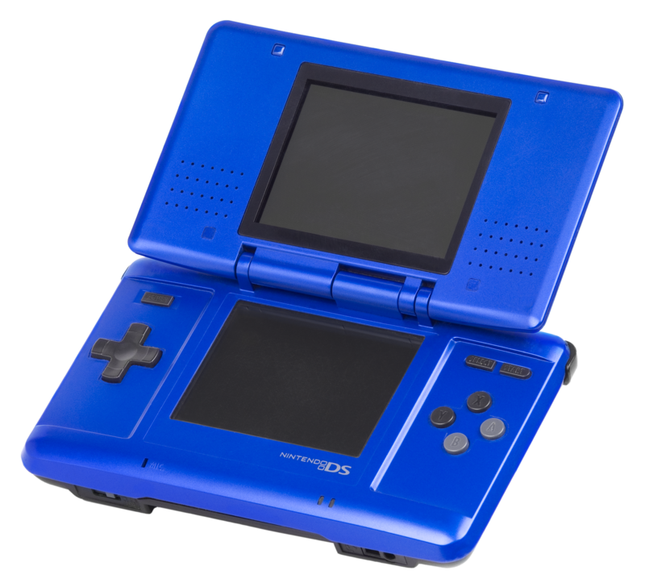
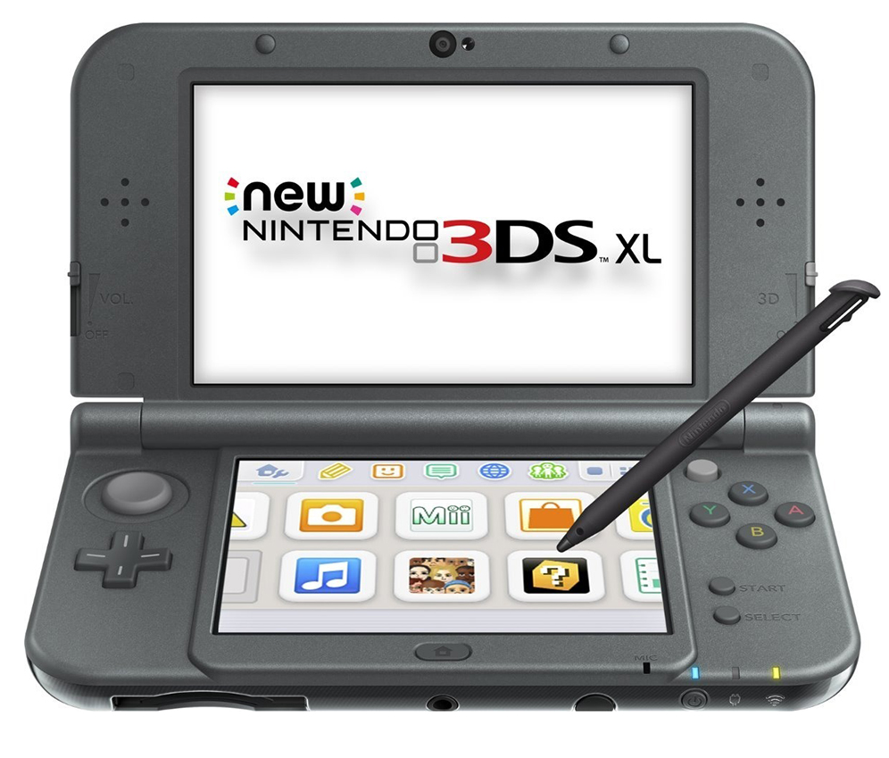
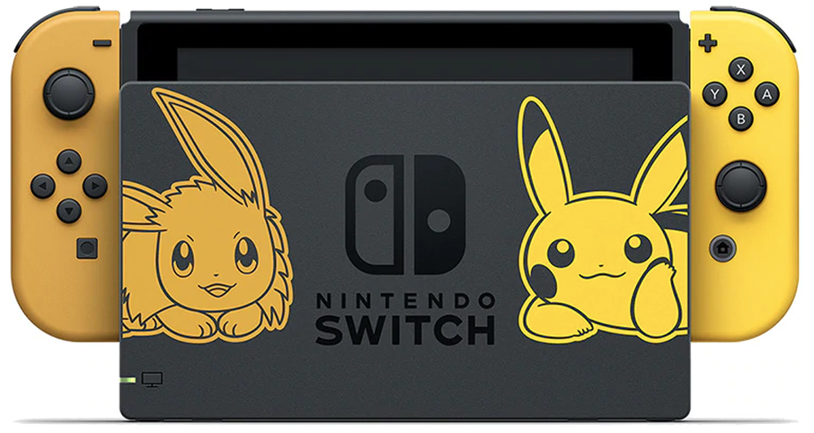

| Generación / Consola |
Juegos |
|
Generacion Cromática
GameBoy

(1) Nintendo 64

(Por compatibilidad de contenido
del juego se agrega a esta generación esta consola)
|
-
Pokémon Green (Sólo salió en Japón)
-
Pokémon Rojo
-
Pokémon Azul
-
Pokémon Amarillo
-
Pokémon Stadium (1)
|
|
Generación Metálica
(La primera generación es totalmente compatible con la segunda, no así al revés, puesto que si un pokémon no existía previamente o posee un ataque no existente, no será aceptado.)
Game Boy Color

(2) Nintendo 64 (Es compatible con las 6 ediciones de Game Boy y las nuevas versiones Oro,
Plata y Cristal)
|
-
Pokémon Oro y Plata
-
Pokémon Cristal
-
Pokémon Stadium 2 (2)
|
|
Generacion Advanced
Game Boy Advance

(3) Remake de la primer generación pero compatibles con los de tercer generación. (Debido a las
nuevas características de la consola los juegos anteriores son incompatibles, se deben utilizar
remakes e intercambiar con los detallados debajo.)
(4) Nintendo GameCube

|
-
Pokémon Rubí y Zafiro
-
Pokémon Esmeralda
-
Pokémon Rojo Fuego (3)
-
Pokémon Verde Hoja (3)
-
Pokémon Colosseum (4)
-
Pokémon XD (4)
|
|
Cuarta Generación
Nintendo DS
 (**)
En paralelo se genero una serie de juegos especificos para las consolas de Sobremesa Wii y WiiU(que
además se podian conectar con DS) iniciada por Pokémon Battle Revolution y con destacados juegos
como la serie PokePark Wii (**)
En paralelo se genero una serie de juegos especificos para las consolas de Sobremesa Wii y WiiU(que
además se podian conectar con DS) iniciada por Pokémon Battle Revolution y con destacados juegos
como la serie PokePark Wii
|
-
Pokémon Diamante y Perla
- Pokémon Platino
- y Pokémon Oro corazón y Plata alma
- Pokemon Mundo Misterioso: Rojo, Azul, Exploradores del Tiempo y de Oscuridad. (**)
|
|
Quinta generación
Nintendo DS
(5) Nintendo 3DS
|
- Pokémon Black & White
- Pokémon Black & White 2 (5)
- Pokémon: Rumble Blast (5)
- Pokémon + Nobunaga's ambition (5)
|
|
Sexta generación
Nintendo 3DS
Nintendo 3DS XL
|
- Pokémon X & Pokémon Y
- Pokémon Rubí Omega & Pokémon Zafiro Alfa
Remake de los juegos para Game Boy
Advance
|
|
Séptima generación
Nintendo 3DS // 3DS XL
(6) Nintendo Switch 
|
- Fuera de esta categoría salió Pokémon Go que tras su boom dió
origen a esta nueva generación
- Pokémon Sol y Luna
- Pokémon Ultrasol y Ultraluna
- Pokémon Let's Go, Pikachu! y Let's Go, Eevee! (6) Remake de Pokémon Amarillo con
integración a Pokémon Go
|
|
Octava generación
Nintendo Switch (7)
(7) Android (integración de transferencia con Pokémon Go desde
noviembre de 2020)
|
- Pokémon espada y Pokémon escudo
- Pokémon Home (7) Servicio en la nube.
|